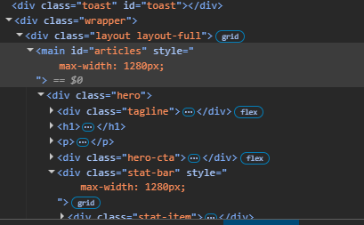

👋 Hello, I'm
Sam Ludwig
Systems & Infrastructure Engineer — keeping 660,000+ users online with 99.9% uptime. PowerShell automator, cloud virtualization tinkerer, and high-cadence endurance cyclist. Melbourne-based.
About Me
I'm an Infrastructure and M365 Engineer with 7+ years bridging physical infrastructure and large-scale cloud environments. Trusted by Victoria Police, Transurban, and the Department of Education to manage complex infrastructure and drive automation-focused outcomes.
Specialist in Microsoft 365 (Exchange, Intune, SharePoint, Teams, Entra ID), PowerShell automation, and endpoint management across environments supporting 660,000+ users. Proven ability to resolve critical L3 escalations, engineer compliance solutions, and deliver enterprise projects from deployment through to post-incident review.
Based in Melbourne's eastern suburbs. Australian citizen. When I'm not automating things, you'll find me on my bike — currently deep into Di2 derailleurs and Strava segments.
Technical Skills
Enterprise-grade expertise across Microsoft cloud, infrastructure, and automation.
☁️ M365 & Cloud
🔐 Identity & Security
💻 Endpoint Management
⚙️ Automation & DevOps
🖥️ Infrastructure
📋 Service Management
Work Experience
7+ years across enterprise IT, managed services, and software development.
- Managed largest SharePoint farm in Southern Hemisphere: 660,000+ users, 1,000+ sites, 99.9% uptime
- Ultimate Tier-3 escalation point across M365/SharePoint Online and Google Workspace, 15% reduction in repeat incidents
- Engineered PnP PowerShell to audit and enforce MFA compliance across 200+ SharePoint sites with automated reporting
- Administered Exchange Hybrid and Teams, resolving complex mail-flow, calendar, and federation issues
- Oversaw AD/Entra ID/Google Workspace sync, resolving identity conflicts for seamless SSO
- Spearheaded Azure cloud adoption and legacy application remediation, aligned with ACSC Essential 8
- Built ServiceNow integration with M365 presence data and algorithmic workload engine eliminating manual triage
- Produced RCA reports and knowledge base reducing resolution time and improving team onboarding
- Designed and implemented automated provisioning workflows reducing onboarding time by 40%
- Led migration of 500+ users from on-premise Exchange to Exchange Online with zero data loss
- Delivered L1/L2 support at MyITHub: device repair, OS reimaging, provisioning, loan device management
- Engineered keystroke injection automation to fully automate ITSM ticket workflows in ServiceNow
- Managed endpoint lifecycle: OS migrations, Autopilot/UEM enrolment, compliant disposal
- Supported self-help kiosk rollout for Knowledge Base, password resets, and ticket logging
- Led Windows 11 enterprise migration across 100+ clinical endpoints with 100% Autopilot adherence in live hospital environment
- Managed full endpoint lifecycle: hardware preparation, Autopilot enrolment, Intune policy application, post-deployment validation
- Primary liaison between clinical end-users and engineering team, resolving EMR and diagnostic tool compatibility issues
- Provided hypercare support to medical staff post-migration, minimising disruption to patient care
- Expert L3 support for GreenOrbit intranet platform, 95% SLA resolution for Cotton On, Harvey Norman, Healthscope
- PowerShell automation reducing migration processing by 87% (2 hours to 15 minutes), saving 10+ hours/month
- Python/PowerShell patching scripts reducing manual effort by 20% and improving patch-cycle consistency
- Authored RCA documentation that became the reference guide for future migration cycles
- Delivered 5+ enterprise SharePoint intranets for Victoria Police, Transurban, Cimic Group using SPFx/React/TypeScript
- CI/CD via Azure DevOps reducing deployment cycles by 25%, ISO 27001 governance frameworks
- Client workshops driving 20% increase in M365 platform adoption
- Led end-to-end migration of legacy on-premise SharePoint intranets to M365
- Layer 1 infrastructure deployments, physical cabling, fault-finding across residential and commercial environments
Case Studies
Real projects with measurable outcomes. The best way to evaluate what I can deliver.
Southern Hemisphere's Largest SharePoint Farm
Department of Education Victoria · Capgemini
The Challenge
Managing the largest SharePoint farm in the Southern Hemisphere — 660,000+ users across 1,000+ sites — with zero tolerance for downtime. The environment required 24/7 monitoring, complex cross-tenant governance, and compliance with Victorian government security frameworks including ACSC Essential 8.
My Role
Ultimate Tier-3 escalation point and senior engineer responsible for the SharePoint Online, Exchange Hybrid, Teams, and Google Workspace environments. Single point of accountability for all major incidents affecting 660K+ users.
Key Outcomes
Hospital Windows 11 Migration — Zero Patient Disruption
St John of God Health Care · 2023
The Challenge
Migrate 100+ clinical endpoints from Windows 10 to Windows 11 in a live hospital environment. No downtime. No disruption to patient care. EMR systems, diagnostic tools, and medical devices all had to remain operational. Any failure could directly impact clinical workflows and patient outcomes.
My Role
Lead endpoint migration engineer. Responsible for hardware preparation, Autopilot enrolment, Intune policy configuration, deployment validation, and hypercare support. Primary liaison between clinical end-users and the engineering team.
Key Outcomes
Automation Pipeline — Cutting Migration Processing by 87%
Knosys (GreenOrbit) · Cotton On, Harvey Norman, Healthscope
The Challenge
Intranet migration processing took 2 hours per migration — entirely manual, error-prone, and a bottleneck for the entire delivery pipeline. The process required data extraction, transformation, validation, and loading across multiple client environments.
My Role
Application Support Engineer delivering L3 support and automation for the GreenOrbit intranet platform. Responsible for maintaining 95% SLA resolution across major clients including Cotton On, Harvey Norman, and Healthscope.
Key Outcomes
Certifications & Education
Azure Administrator Associate
Microsoft AZ-104
Azure Fundamentals
Microsoft AZ-900
ITIL 4 Foundation
Service Management
Certified Scrum Master
CSM
Web Development Bootcamp
Coder Academy — 2018
Diploma of Information Technology
Higher Education
ATS Keywords
These are keywords recruiters and ATS systems scan for. Every term here reflects real, verifiable enterprise experience.
M365 Platform
Identity & Security
Endpoint & Automation
Infrastructure & ITIL
Industries Served
Key Projects
Side projects and open-source contributions.
Job Dashboard
FeaturedHigh-performance local-first telemetry dashboard and job discovery engine. Built with FastAPI and React/Vite, featuring automated multi-source scraping, dual-persona AI scoring, and resilient SQLite WAL mode persistence.
View on GitHub →365AdminApp Suite
Enterprise-grade PowerShell administration toolkit for Microsoft 365, automating tenant-wide user lifecycle provisioning, license rebalancing, and Entra ID security audits.
View on GitHub →ServiceNow UI Engine
Client-side browser extension integrating M365 presence data with ServiceNow ticket queues for real-time workload visibility and triage.
View on GitHub →M365 Diagnostic GUI
Python tool enabling L1/L2 service desk teams to execute advanced PowerShell diagnostics against Exchange and Teams without terminal complexity.
View on GitHub →MSP Playbook
Comprehensive resource for Australian IT workers — MSP operational reviews, salary guides, contract checklists, and industry analysis.
Visit Site →What People Say
References available upon request.
Sam's PowerShell automation reduced our migration processing from 2 hours to 15 minutes. His ability to translate complex technical solutions into business outcomes is exceptional.
The SharePoint farm Sam manages is the largest in the Southern Hemisphere. His dedication to 99.9% uptime across 660,000 users speaks for itself.
Sam led our Windows 11 migration across 100+ clinical endpoints with zero patient care disruption. In a hospital environment, that's the highest compliment.
Why Hire Me
What sets me apart from other candidates.
Enterprise Scale
Managed the largest SharePoint farm in the Southern Hemisphere (660K+ users). I don't just support systems — I architect solutions at scale.
Automation First
Every repetitive task is a candidate for automation. My PowerShell scripts have saved 100+ hours monthly across multiple organizations.
Results Driven
15% reduction in repeat incidents. 87% faster processing. 99.9% uptime. I measure success in business outcomes, not hours worked.
Client Trusted
Trusted by Victoria Police, Transurban, and Department of Education. I build relationships that last beyond individual projects.
Beyond the Terminal: Endurance & Maker
The same obsession with precision, cadence, and telemetry applies whether tuning M365 automation or climbing roads on two wheels.
Scott Foil RC & Telemetry
High-cadence endurance road cyclist focused on sustained power output, aerodynamic efficiency, and live data telemetry. Deeply passionate about bike mechanics, electronic shifting diagnostics, and gear ratio optimization.
Systems Tinkering & Craft
Bridging physical craftsmanship and infrastructure architecture. Running a private local-first homelab for testing virtualization, network isolation, and IoT automation alongside tactile hardware fabrication and timber joinery.
Get In Touch
Let's discuss how I can contribute to your team.
Let's connect
I'm actively looking for my next opportunity in Melbourne. Whether you're hiring for a managed services, infrastructure, or systems engineering role — I'd love to chat.